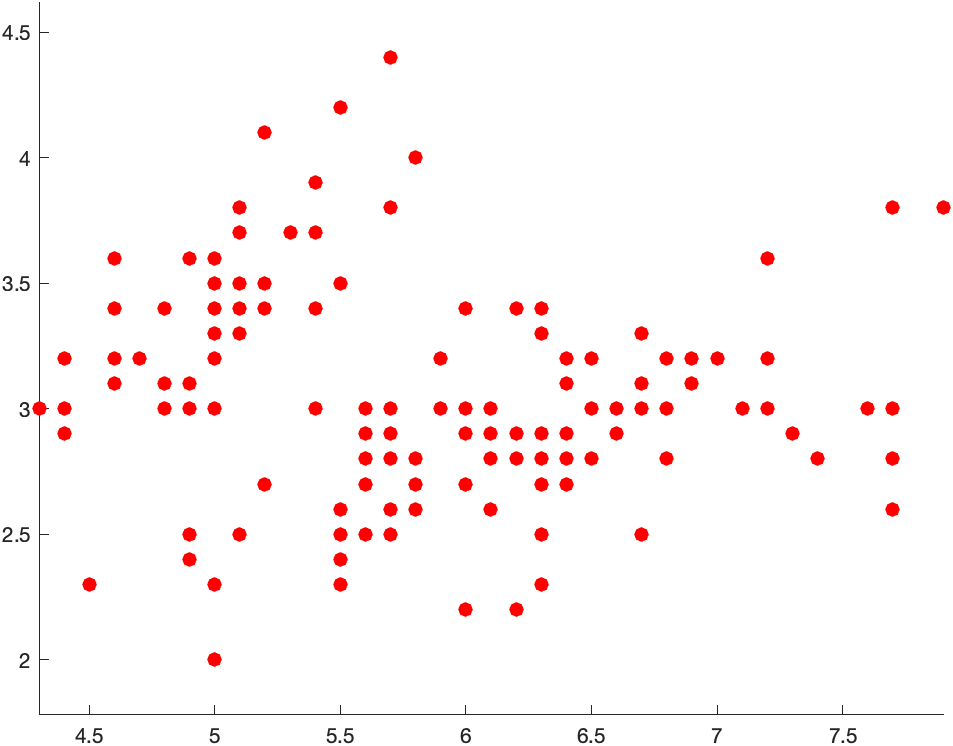
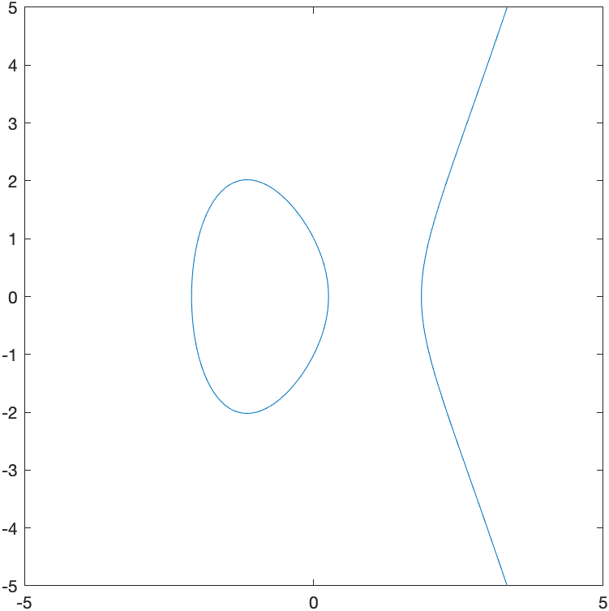
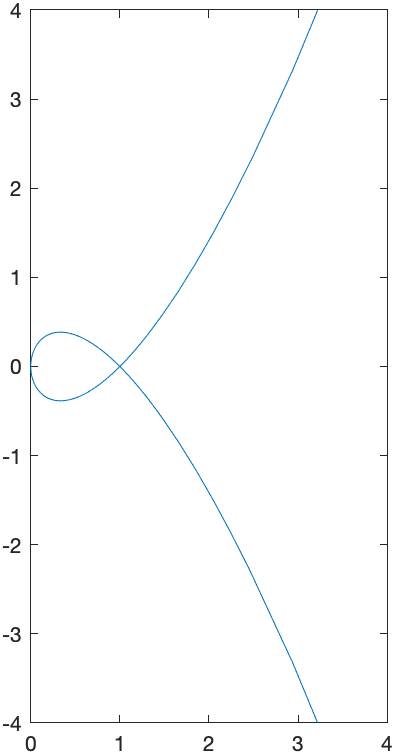
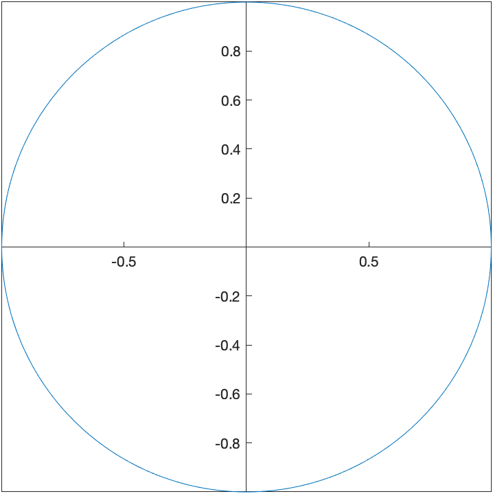

Previous Chapter | Return to all notes | Next chapter
We have already seen that Matlab has some great plotting capabilities. In this chapter, we will see a number of other plots that Matlab (and most CAS programs) can produce. Note: we covered many of these in Chapter 2, but are repeated here so everything is in one chapter.
In order to plot the expression \(x^{2}\), try typing fplot(x^2). You should see a plot similar to
Typically, the easiest way to change the plotting window of the plot is to use an option in the plot command. For example, if we want a plot on the interval \([-2,2]\), then typing fplot(x^2,[-2 2]) will produce the plot:
![Plot of x^{2} on [-2,2]](images/ch02/plot02.png)
If you want to make sure that the axes include other y values, you can adjust the limits after the fact. After you have the plot, try
fplot(x^2,[-2 2])
ylim([-2 2])which will generate:

If you’d like a title on your plot, you can add the title option. For example, try
fplot(x^2,[-2 2])
title("A plot of x^2")and you will see

Notice that matlab does some fancy formatting in that it formats x^2 as a power. You can put latex commands in the title (we will see what latex is later in the course.)
The standard way that Matlab plots functions is to use a box style with the tick marks on the bottom and left of the box. If instead, you desire the standard coordinate axes, you can apply:
set(gca, 'XAxisLocation', 'origin', 'YAxisLocation', 'origin')after any plot. For example, the plot above with the plotting window adjusted as:
fplot(x^2,[-2 2])
ylim([-2 2])
title("A plot of x^2")
set(gca, 'XAxisLocation', 'origin', 'YAxisLocation', 'origin')will produce:

A plot of \(\cos x\) on \([-2\pi,2\pi]\), can be generated with:
fplot(cos(x),[-2*pi 2*pi])and looks like: 
and I’m sure you noticed (since you are quite astute) that the tick marks are in integers and it would be nice to see the function plot in fractions of \(\pi\) instead. We can change this with the xticks and xticklabels functions. Here is a cosine plot with some nicer ticks:
fplot(cos(x),[-2*pi 2*pi])
S = sym(-2*pi:pi/2:2*pi);
xticks(double(S))
xticklabels(arrayfun(@texlabel,S,'UniformOutput',false))and the result is:
Before just plowing on, let’s go through those last statements in detail. The line:
S = sym(-2*pi:pi/2:2*pi);creates an array of symbolic values from \(-2\pi\) to \(2\pi\) by steps of \(\pi/2\). (Take the semicolon off the end of the line and rerun to see). The line
xticks(double(S))sets the xticks to the numerical values (that’s what the double function does) to the numbers in S. Then
xticklabels(arrayfun(@texlabel,S,'UniformOutput',false))set’s the tick labels on the x-axis to the values in S. We’ll see the arrayfun later and the @texlabel function is a way to ensure that the latex command is used to make things look better. Again, we’ll talk about latex later in the course.
Make a mental note that this allows us to change the x-ticks to multiples of \(\pi\) is a much nicer way. You’ll need this later.
Often, we would like to include more that one function on a single set of axes. Here is how to plot both \(x^2\) and \(x^3\).
fplot([x^2, x^3],[-3,3])The result is:

A legend is important for any plot containing more than one function. This allows you to distinguish between the curves. There is a legend option to the plot function. For example, to add a legend and a title to the plot of \(x^{2}\) and \(x^{3}\) type:
fplot([x^2 x^3], [-3,3])
title("A plot of x^2 and x^3")
legend("x^2","x^3")and you will see: 
Recall that the function \(f(x)=\sqrt{4-x^2}\) is the top half of a circle. If we plot this with
fplot(sqrt(4-x^2),[-2 2])we’ll get the following plot: 
and this just doesn’t look like a circle. This is because the aspect ratio isn’t 1–this means that 1 unit in the x-direction and 1 unit in the y-direction are not equal.
We can do that in Matlab with the following:
fplot(sqrt(4-x^2),[-2 2])
daspect([1 1 1])and the result is: 
Note: there are three numbers here because we will see 3D plots need can have different aspects as well. Matlab does this in general by ensuring that it know the relative sizes of all three axes.
Another common plot is that of a piecewise function, consider \[f(x) = \begin{cases} x & x<0 \\ 3-x^{2} & x \geq 0 \end{cases}\]
Recall that a piecewise function is a function \(f\) takes on the values of \(x\) when \(x<0\) and when \(x \geq 0\), then it has the functional form \(3-x^2\). We wil plot this by creating a plot with two different curves on it.
The way to enter this in is the following:
f = piecewise(x<0,x,x>=0,3-x^2)
fplot(f, [-3 3])and this results in the following plot: 
The vertical line connecting (0,0) with (0,3) is not part of the plot. Matlab simply just connects a bunch of points. Sometimes it seems that it can figure out that it’s not part of the plot. Unfortunately, if it doesn’t automatically remove the line, you need to do something different, like the following:
fplot(f,[0,3])
hold on
fplot(f,[-3,-0.0001])
hold offwhich first plots the function on the interval \([0,3]\), then holds the plot which means that we can add additional graphs on the plot. Then we plot the function on \([-3,-0.0001]\), which is just an approximation of 0–if you put in 0, you get the same results as above. Lastly, hold off switches the plot back to normal (meaning don’t add additional graphs).
The result is
which is better but it looks like two different curves becaues the two pieces are different colors. We can set them both to be the same color with:
fplot(f,[0,3],'blue')
hold on
fplot(f,[-3,-0.0001],'blue')
hold off
Plot the piecewise function:
\[ f(x) = \begin{cases} 1-(x-\pi/2)^2 & x > \frac{\pi}{2} \\ 1 & -\frac{\pi}{2} \leq x \leq \frac{\pi}{2} \\ \sin x & x < -\frac{\pi}{2} \\ \end{cases} \]
Although Matlab doesn’t often pick up on jump discontinuities from piecewise functions, it seems to do well with infinite discontinuities. Consider:
fplot(1/(x-1),[-3,3])which has the result:
The vertical dashed line is a vertical asymptote in this case.
Plot \(f(x) = \tan(x)\) on \([-3\pi,3\pi]\) and use multiples of \(\pi/2\) for the horizontal labels. Hint: see above to do this. Does Matlab correctly pick up the vertical asymptotes in this case?
A scatter plot is a set of points plotted in the \(xy\)-plane. Consider the points \((0,1), (1,3), (3,4), (6,5), (8,8), (10,9)\). We will see how to plot this.
For this, we create a vectors of the x points and y points:
xvals=[0 1 3 6 8 10]
yvals=[1 3 4 5 8 9]and the call the function scatter:
scatter(xvals,yvals)resulting in

Notice that the points by default are open circles, which are hard to see. The next exercise goes through how to change the type and size.
Personally, I don’t think open circles are very good visually even though this is the default in Matlab. This section shows how to change attributes of the points.
Adding a number in the scatter changes the point size. For example:
scatter(xvals,yvals,50)roughly doubles the size of the points. Try increasing or decreasing the point size.
Add the option 'filled' inside the scatter command to fill in the circles.
scatter(xvals,yvals,'filled')and you can using both the size and 'filled' together.
Here’s a list of different types of markers for each of the points: * 'o' circle * 'd' diamond * '*' asterisk (star) * '.' point * 'x' cross
and there are others. See the help page for scatter for all of the options
You can change the marker color both the edge and face by adding the following to the scatter plot: * 'r' or 'red' — red * 'g' or 'green' — green * 'b' or 'blue' — blue * 'c' or 'cyan' — cyan * 'm' or 'magenta' — magenta * 'y' or 'yellow' — yellow * 'k' or 'black' — black * 'w' or 'white' — white
The following changes the size, shaped, fills the marker and change the color:
scatter(xvals,yvals,150,'d','filled','MarkerFaceColor','magenta')We can combine a scatter and function plots using the hold command. Let’s say we have the points: (0,10),(2,9),(3,7),(5,6),(7,4),(8,2) and we wish to plot a best fit line as well. First, let’s define the points
xvals = [0,2,3,5,7,8];
yvals = [10,9,7,6,4,2];The best-fit line can be found to be \(y=10.8665-0.9680x\) and we will show how to do this later.
syms x
scatter(xvals,yvals,100,'blue','filled');
hold on
fplot(10.8665-0.9680*x,[-0.5,9])
hold offThis will produce a plot that looks like:
First, download the file iris.csv and save the file in the directory where you are working.
iris = readmatrix('iris.csv')and you should see that it loaded a file that has 150 rows and 5 columns. And then we can plot individual columns:
scatter(iris(:,1),iris(:,2),50,'filled','r')
axis equalplots the first and second columns. The result is 
If a you have a function of \(x\) and \(y\) and would like to visualize the set of points that satisfy the curve, then fimplicit is what you want to use. For example, the circle with center of the origin and radius 5 is
syms x y
fimplicit(x^2+y^2==25)
daspect([1 1 1])will give the following plot:

where the aspect ratio has been set to 1 to make the circle like a circle. Another example where this is needed is:
fimplicit(x^2/9+y^2/16==1)generates  and is an ellipse, but just doesn’t look right without changing the plotting window and the aspect ratio.
and is an ellipse, but just doesn’t look right without changing the plotting window and the aspect ratio.
The commands:
fimplicit(x^2/9+y^2/16==1)
xlim([-5 5])
ylim([-5 5])
daspect([1 1 1])
set(gca, 'XAxisLocation', 'origin', 'YAxisLocation', 'origin')results in 
If we want to plot the circles \(x^2+y^2=r^2\) for \(r=1,2,3,4\), we could do 4 implicit curves. This points out that an alterative is to write then differently. We could write the circle of radius 1 as \[x^2+y^2-1=0\] instead and recall that this is the set of all points that make this equation 0. If we combine that with the circle of radius 2 by
two_circles = (x^2+y^2-1)*(x^2+y^2-4)then this is still all the points that make this equation zero, but it could be the set of points on the circle of radius 1 or radius 2. If we define:
circles = (x^2+y^2-1)*(x^2+y^2-4)*(x^2+y^2-9)*(x^2+y^2-16)and plot the results with
fimplicit(circles)
daspect([1 1 1])we get

In Chapter 5, we found the tangent line to the elipitic curve \[y^2=x^3-4x+1\] at the point \((-1,2)\) with the following step. First the plot is
syms x y
elliptic_curve = y^2==x^3-4*x+1
fimplicit(elliptic_curve)
daspect([1 1 1])which is 
and we can find the tangent line with
F(x,y) = lhs(elliptic_curve)-rhs(elliptic_curve)
dydx = -diff(F(x,y),x)/diff(F(x,y),y)
m = subs(dydx,[x y], [-1 2])
tanLine = m*(x+1)+2which shows the tangent line is \[ y = \frac{7}{4}-\frac{x}{4}\] and although we could plot it implicitly with the curve by setting both equal to zero, instead we’ll use the hold function
fimplicit(elliptic_curve)
hold on
fplot(tanLine)
hold off
title("Elliptic curve and the its tangent line")
legend("y^2=x^3-4x+1","tangent",'Location','northwest')
daspect([1 1 1])which shows that

###Exercise
A parametric graph or parametric curve is one in which the \(x\) and \(y\) coordinates depend on another variable, often \(t\). In general, we write \[x=f(t) \qquad y=g(t)\]
A nice example is \[x=t^{2} \qquad y=t^{3}-t\]
For a given set of values of \(t\), the \(x\) and \(y\) values can be found by plugging into the functions \(x(t)\) and \(y(t)\).
First define \(x(t)\) and \(y(t)\) in Matlab:
syms t
x(t) = t^2
y(t) = t^3-tand then we can make a table with:
xvals = arrayfun(@(t) x(t),-2:0.5:2)
yvals = arrayfun(@(t) y(t),-2:0.5:2)
[-2:0.5:2; xvals; yvals]'\[\begin{array}{c|c|c} t & x & y & \\ \hline -2 & 4 & -6 -1.5 & 2.25 & -1.875 \\ -1 & 1 & 0 \\ -1/2 & 1/4 & -3/8 \\ 0 & 0 & 0 \\ 1/2 & 1/4 & 3/8 \\ 1 & 1 & 0 \\ 1.5 & 2.25 & 1.875 \\ 2 & 4 & 6 \end{array}\]
We can plot the points in Matlab with:
plot(xvals,yvals)
daspect([1 1 1])and this leads to

Of course Matlab also has the direct way of plotting a parametric curve with
fplot(x(t),y(t),[-2 2])which leads to 
The parametric curve given by \[x=\cos t \qquad y=\sin t\] for \(0\leq t \leq 2\pi\) is another way to write a circle with center at the origin and radius of 1.
This is because if we plug these functions into the equation \(x^{2}+y^{2}=1\), then \[ (\cos t)^{2}+(\sin t)^{2}=1 \] which is true for all \(t\) because \(\cos^{2} t + \sin^{2} t =1\).
We can plot this with
fplot(cos(t),sin(t),[0 2*pi])
set(gca, 'XAxisLocation', 'origin', 'YAxisLocation', 'origin')
daspect([1 1 1])which results in 
We can shift any curve horizontally and vertically in the following way, which we’ll show using an example. If we shift the circle above right 3 and up 2, we’ll get the circle with center \((3,2)\). This curve can be written: \[x=3+\cos t \qquad y=2+\sin t\] and plotting with a window that includes the origin is:

And we can make this an ellipse by multiplying the \(\cos t\) and \(\sin t\) terms by constants. For example,
\[x=3+1.5\cos t \qquad y=2+0.8\sin t,\] if we enter
fplot(1.5*cos(t)+3,0.8*sin(t)+2,[0 2*pi])
set(gca, 'XAxisLocation', 'origin', 'YAxisLocation', 'origin')
xlim([-1 5])
ylim([-1 5])
daspect([1 1 1])where the scaling is constrained so that the ellipse looks like an ellipse.
Here we reproduce the tangent line to the circle of radius 5 at the point \((3,4)\).
The parametric curve given by \[x=5\cos t \qquad y=5\sin t\] for \(0\leq t \leq 2\pi\) is another way to write a circle with center at the origin and radius of 5.
To plot this in Matlab, we use the fplot command with a different syntax.
syms t
fplot(5*cos(t),5*sin(t),[0,2*pi])
set(gca, 'XAxisLocation', 'origin', 'YAxisLocation', 'origin')
daspect([1 1 1])will produce the following circle.

which is the same plot as the implicit one above.
To make some things easier, let’s define
x(t)=5*cos(t)
y(t)=5*sin(t)We can also find the tangent line to a parametric curve in the following way. The derivative \(\frac{dy}{dx}\) to a curve can be written: \[ \frac{dy}{dx} = \frac{\frac{dy}{dt}}{\frac{dx}{dt}} \]
To find the derivative to the circle above at the point \((3,4)\), we need to find the \(t\) value at the point. We can do this by solving for \(t\) by setting \(x=3\) and \(y=4\).
t1 = solve(x(t)==3)
t2 = solve(y(t)==4)The first returns \[\left(\begin{array}{c} -\mathrm{acos}\left(\frac{3}{5}\right)\\ \mathrm{acos}\left(\frac{3}{5}\right) \end{array}\right)\] and the second returns \[\left(\begin{array}{c} \mathrm{asin}\left(\frac{4}{5}\right)\\ \pi -\mathrm{asin}\left(\frac{4}{5}\right) \end{array}\right)\]
For each, there are two values (remember the way that solving trig functions work from Chapter ??? ). Let’s see which one is correct by plugging back into the functions \(x\) and \(y\).
x(t1)
y(t1)and the first returns: \[\left(\begin{array}{c}
3\\
3
\end{array}\right)\] with the second \[\left(\begin{array}{c}
-4\\
4
\end{array}\right)\] showing that the second value of t1 is the correct value of t.
Alternatively if we look at
x(t2)
y(t2)the first returns \[\left(\begin{array}{c}
3\\
-3
\end{array}\right)\] and the second returns \[\left(\begin{array}{c}
4\\
4
\end{array}\right)\] This shows that the first value of t2 is correct.
To find the derivative at a point, we use the following:
dydx(t) = diff(y(t),t)/diff(x(t),t)which returns: \[-\frac{\mathrm{cos}\left(t\right)}{\mathrm{sin}\left(t\right)}\] And to find the slope, we need to plug in the value of \(t\) found above. It was the second element of t1 so
dydx(t1(2))which return \(-3/4\). Alternatively, we can use the first element of t2 or
dydx(t2(1))which also returns \(-3/4\).
Note that if just type out the value of \(t\), we get a bit of a mess:
dydx(acos(3/5))the result is \[-\frac{\mathrm{cos}\left(\frac{522020799781813}{562949953421312}\right)}{\mathrm{sin}\left(\frac{522020799781813}{562949953421312}\right)}
\] which isn’t as nice as \(-3/4\). The reason this happened is because acos(3/5) gave a result of 0.9273… which is rounded off a bit and then Matlab using an exact version of that number as a fraction.
The tangent line then is the curve
sym x
tanLine=-3/4(x-3)+4fplot(5*cos(t),5*sin(t),[0,2*pi])
hold on
fplot(tanLine)
hold off
daspect([1 1 1])
xlim([-8 8])
legend("x^2+y^2==1","tangent line")with give the following plot:
Often it is nice to plot a line segment. Consider the line segment between points \[P(x_1,y_1) \qquad\text{and}\qquad Q(x_2,y_1)\] one way to do this is to find the line between these and the plot the line only on the values of x that are value.
There are a couple of problems with this: 1. You’d have to find the slope of the line. Even though this isn’t too hard, it’s a calculation that would need to happen. 1. If the two points have the same \(x\)-coordinate, then the slope isn’t defined and you couldn’t do it.
Instead, we’re going to define the line segment using a paramtric curve as: \[ x(t) = x_2 t + (1-t) x_1 \qquad y(t) = y_2 t + (1-t) y_1\]
In short, this works because when \(t=0\), then \(x(0) = x_2 \cdot (0) + 1 \cdot x_1 = x_1\) and \(y(0) = y_2 \cdot (0) + 1 \cdot y_1 = y_1\). Similarly, when \(t=1\), \(x(1)=x_2\) and \(y(1)=y_2\), so if we plot this parametrically for \(0 \leq t \leq 1\), then we get all the points on line between \(P\) and \(Q\).
An example plotted would be the point between \((-2,1)\) and \((3,4)\) would be the parametric curve: \[ x(t) = 3 t + (-2)(1-t) \qquad y(t) = 4 t + 1(1-t) \]
It is often that one will use polar coordinates to create a plot. Here are a few examples where this is helpful. If a function is written in polar coordinates, then it is written in the form \(r=f(\theta)\).
This is a specific form of a parametric curve with the form: \[x=f(\theta) \cos \theta \qquad y=f(\theta)\sin \theta\]
For example, the cardioid that you plotted above can be written: \[r=1+\cos(\theta)\] and we can plot it using the ezpolar command
syms th
ezplot(1+cos(th))The plot will look like: 
The curve \(r=1+2\sin \theta\) passes through the origin. We will find the tangent line to the curve at the point.
First, a plot of the curve is found by
ezpolar(1+2*sin(th))resulting in
We now seek the tangent line to the curve at the point \(P(1,0)\). It’s helpful to define the \(x\) and \(y\) coordinates parametrically using \(x=r \cos \theta\) and \(y=r \sin \theta\) for \(r=1+2\sin \theta\):
x(th) = (1+2*sin(th))*cos(th)
y(th) = (1+2*sin(th))*sin(th)And then to find the value of \(\theta\) at the point \(P(1,0)\), we set \(x=1\) and \(y=0\).
th1 = solve(x(th)==1,'Real',true)which returns \[\left(\begin{array}{c}
2\,\mathrm{atan}\left(\frac{1}{9\,\left(\frac{\sqrt{27}\,\sqrt{29}}{27}+\frac{28}{27}\right)^{1/3} }+\left(\frac{\sqrt{27}\,\sqrt{29}}{27}+\frac{28}{27}\right)^{1/3} -\frac{2}{3}\right)\\
0
\end{array}\right)\] which looks like a bit of a mess. Note we have used the option 'Real',true in the solve command to ensure we only get real (not complex) numbers for a solution.
As we do before, we’d like to know if either of these are the right values for th, so we plug into x(t) and y(t) with
x(th1)
y(th1)and we get a bit of a mess, but the second value gives \(x=1\) and \(y=0\), the point we want, so th=0 is the right point.
The slope of the tangent line at the point \((1,0)\), where \(\theta=0\) is
dydx(th) = diff(y(th),th)/diff(x(th),th)
m = dydx(0)which is \(\frac{1}{2}\). Then using the point-slope formula for the tangent line, we get: \[y=\frac{1}{2}(x-1)+0\]
To plot both, we’ll use the parametric form (an alternative way will be presented below):
syms x
ezpolar(1+2*sin(th))
hold on
fplot(m*(x-1))
hold offto get the plot: 
Find the tangent line to the cardioid \(r=1+\cos(\theta)\) at the point \((0,1)\). Plot both on the same axes.
There have a been a few examples earlier about putting multiple plots together and Matlab has a very robust way to do this. This section explains it.
In generally, command that produce plots, like fplot, plot,ezpolar,scatter other will simply just produce a new plot of what you requested.
Instead, if you want to superimpose plots, then the hold command is necessary. Let’s look at an example that we did earlier:
fplot(5*cos(t),5*sin(t),[0,2*pi])
hold on
fplot(-3/4*(x-3)+4)
hold off
daspect([1 1 1])
xlim([-8 8])
legend("x^2+y^2==1","tangent line")hold on tells Matlab that any subsequent plots will go on the same axes (superimpose) on this plot.hold off says to go back to the orignal way of plotting in which subsequent plotting commands produces a new plot.Animated plot are often helpful to visualize if you have a parameter in a plot and you want to view what’s happening to it. Consider the following: How does the parameter \(a\) affect the graph of \(y=(x-t)^{2}\). Examine \(t\) from \(-3\) to \(3\).
syms t x
fanimator(@fplot,(x-t)^2,[-6 6],'AnimationRange',[-3 3])
xlim([-4 4])
ylim([-2 6])
axis equal
set(gca, 'XAxisLocation', 'origin', 'YAxisLocation', 'origin')
playAnimationwhere primarily the fanimator function is the important thing here. The arguments of this are
@ in front.Also, the command playAnimation simply just plays the animation.
The following animation is the result:
Perhaps we want to see what happens to the parametric curve \[ x=5\cos(t)\qquad y=b\sin t\] for some \(b\) values.
Since this is a paramtric plot, we need to include both \(x(t)\) and \(y(t)\). Also, we need to tell fanimator that we are using b as the parameter.
syms t b
fanimator(@fplot,5*cos(t),b*sin(t),[0, 2*pi],'AnimationRange',[1 8],'AnimationParameter',sym('b'))
hold on
fanimator(@(b) text(6,7,"b="+num2str(b,2)+" "),'AnimationRange',[1 8],'AnimationParameter',sym('b'));
hold off
xlim([-8 8])
ylim([-8 8])
axis equal
set(gca, 'XAxisLocation', 'origin', 'YAxisLocation', 'origin')
playAnimationThe result is
You can see that this is an ellipse in which the \(y\)-range of the ellipse is the valid of \(b\).
We can also make a animation based on a polar plot. Consider \[r(\theta)=1-a\sin \theta\] for \(-4 \leq a \leq 4\).
Unfortunatetly, it doesn’t appear that ezpolar and fanimator play nice together, so recall that a polar plot is just a parametric plot of a particular form, so we’ll plot that:
The following will produce an animation of this:
syms th a x y
x(th) = (1-a*sin(th))*cos(th);
y(th) = (1-a*sin(th))*sin(th);
fanimator(@fplot,x(th),y(th),[0 2*pi],'AnimationRange',[-4 4],'AnimationParameter',sym('a'))
hold on
fanimator(@(a) text(4,4,"a="+num2str(a,2)+" "),'AnimationRange',[-4 4],'AnimationParameter',sym('a'));
hold off
xlim([-5 5])
ylim([-5 5])
axis equal
set(gca, 'XAxisLocation', 'origin', 'YAxisLocation', 'origin')
playAnimationThe set of points defined by \[y^{2} (y^{2}-a^{2})=x^{2}(x^{2}-b^{2})\] are called the Devil’s curve. Let \(b=1\), and let \(a\) range from 0.1 to 2.1 in an animated plot.
Maple also handles some plots in three dimensions. This is just a few examples. Take a look at the Help Browser for more information on these.
Notice after plotting each of these, you can use your mouse to spin the plot around getting a better perspective.
This is plot of the function \(z=x^{2}+y^{2}\).
syms x y
fsurf(x^2+y^2)
And if you click on the plot there is a cube with a rotating arrow button at the top. Click that and you can rotate the plot.
This is a plot of a helix written parametrically: \[x=\cos t \qquad y=\sin t \qquad z=t/10\]
syms t
fplot3(cos(t),sin(t),t,[0,4*pi])which results in

Here’s a plot of the sphere \[x^{2}+y^{2}+z^{2}=1\]
implicitplot3d(x^2+y^2+z^2 = 1, x = -1 .. 1, y = -1 .. 1, z = -1 .. 1)which produces the plot: 
And the following plots both an ellipsoid and a plane that cuts through it:
syms x y z
fimplicit3(x^2/4+y^2/9+z^2==1)
hold on
fimplicit3(x+2*y+3*z==1)
hold off
daspect([1 1 1])
view([-99.57 27.87])
plot28.png")where the view([-99.57 27.87]) line was created when rotating and inserted. The resulting plot is: 
A basic plot of the field \(\textbf{F} = y \hat{i}-x \hat{j}\) is
[X,Y] = meshgrid(-2:0.25:2);
DX = Y;
DY = -X;
quiver(X,Y,DX,DY)gives the plot:
and if you want a direction field (in that the length of the vectors are all the same)
[X,Y] = meshgrid(-2:0.25:2);
DX = Y;
DY = -X;
L = sqrt(DX.^2+DY.^2);
quiver(X,Y,DX./L,DY./L)and the result is 
If we want a 3D plot of a vector field, say \[\vec{F}(x,y,z) = x \hat{i}+y \hat{j} + z \hat{k}\]
[X,Y,Z] = meshgrid(-2:0.5:2,-2:0.5:2,-2:0.5:2);
DX = X;
DY = Y;
DZ = Z;
quiver3(X,Y,Z,DX,DY,DZ)produces